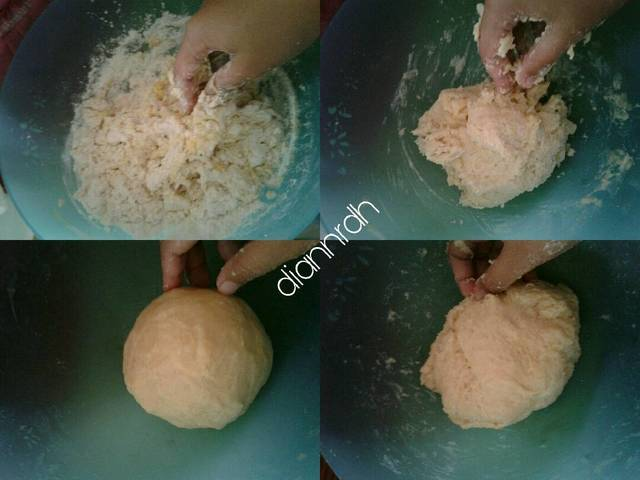

Bahan-bahan:

- 250 gr tepung terigu
- 1 butir telur
- 3 sdm margarin, lelehkan
- 100 ml air hangat
- 2 sdm susu bubuk
- 1/2 sdt garam
- margarin leleh untuk olesan
- minyak untuk merendam
Langkah-langkah:
- Campurkan semua bahan roti menjadi satu

- Uleni adonan sampai kalis (aku pake tangan) jangan takut jika adonan lengkat ya, sesekali olesi tangan dengan tepung (tapi jangan menambahkan tepung) uleni terus sampai kalis

- Kalisnya adonan canai tidak seperti adonan roti ya, kita-kira seperti ini saja sudah cukup